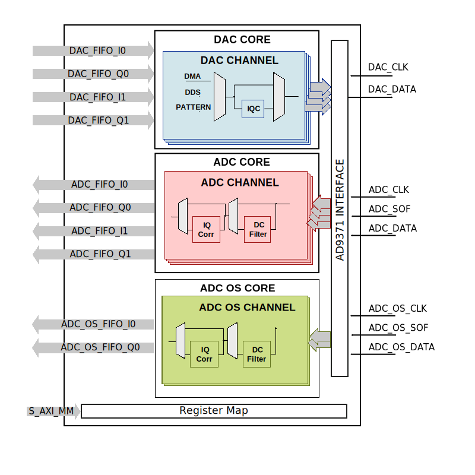

AXI HDMI TX#
The AXI HDMI TX IP core can be used to interface the ADV7511 and ADV7123 devices using an FPGA.
Features#
AXI based configuration
Supports multiple resolution (max 1080p)
Video transmission on 36/24/16 bits or 8 bits RGB
Supports embedded sync (16bit data)
YCbCr or RGB color space output
Data clipping (min. and max. for each chroma/color value)
Supports Xilinx 7 Series and Ultrascale devices.
Supports Altera 5 Series SoC
Files#
Name |
Description |
|---|---|
Verilog source for the peripheral. |
Block Diagram#
Configuration Parameters#
Name |
Description |
Default Value |
Choices/Range |
|---|---|---|---|
ID |
Core ID should be unique for each axi_hdmi_tx IP in the system. |
0 |
|
CR_CB_N |
Used in the chroma subsampling process, selecting which of the red or blue data components will be transmitted first in-between green samples. 1 = red, 0 = blue |
0 |
|
FPGA_TECHNOLOGY |
Used to select the FPGA Technolgy; beyond the “Choices/Range” listed, also supports Altera 5 series (101) devices. |
0 |
Unknown (0), 7series (1), ultrascale (2), ultrascale+ (3), versal (4) |
INTERFACE |
Interface type towards the 7511. Available options: 16_BIT, 24_BIT, 36_BIT, 16_BIT_EMBEDDED_SYNC, VGA_INTERFACE |
16_BIT |
16_BIT, 24_BIT, 36_BIT, 16_BIT_EMBEDDED_SYNC, VGA_INTERFACE |
OUT_CLK_POLARITY |
0 = Launch on rising edge, 1 = Launch on falling edge. |
0 |
Interfaces#
Physical Port |
Logical Port |
Direction |
Dependency |
|---|---|---|---|
s_axi_awaddr |
AWADDR |
in [15:0] |
|
s_axi_awprot |
AWPROT |
in [2:0] |
|
s_axi_awvalid |
AWVALID |
in |
|
s_axi_awready |
AWREADY |
out |
|
s_axi_wdata |
WDATA |
in [31:0] |
|
s_axi_wstrb |
WSTRB |
in [3:0] |
|
s_axi_wvalid |
WVALID |
in |
|
s_axi_wready |
WREADY |
out |
|
s_axi_bresp |
BRESP |
out [1:0] |
|
s_axi_bvalid |
BVALID |
out |
|
s_axi_bready |
BREADY |
in |
|
s_axi_araddr |
ARADDR |
in [15:0] |
|
s_axi_arprot |
ARPROT |
in [2:0] |
|
s_axi_arvalid |
ARVALID |
in |
|
s_axi_arready |
ARREADY |
out |
|
s_axi_rdata |
RDATA |
out [31:0] |
|
s_axi_rresp |
RRESP |
out [1:0] |
|
s_axi_rvalid |
RVALID |
out |
|
s_axi_rready |
RREADY |
in |
Physical Port |
Logical Port |
Direction |
Dependency |
|---|---|---|---|
s_axi_aclk |
CLK |
in |
Physical Port |
Logical Port |
Direction |
Dependency |
|---|---|---|---|
s_axi_aresetn |
RST |
in |
Physical Port |
Logical Port |
Direction |
Dependency |
|---|---|---|---|
vdma_ready |
TREADY |
out |
|
vdma_valid |
TVALID |
in |
|
vdma_data |
TDATA |
in [63:0] |
|
vdma_end_of_frame |
TLAST |
in |
Physical Port |
Logical Port |
Direction |
Dependency |
|---|---|---|---|
reference_clk |
CLK |
in |
Physical Port |
Logical Port |
Direction |
Dependency |
|---|---|---|---|
hdmi_out_clk |
CLK |
out |
INTERFACE == "16_BIT" || INTERFACE == "24_BIT" || INTERFACE == "36_BIT" || INTERFACE == "16_BIT_EMBEDDED_SYNC" |
Physical Port |
Logical Port |
Direction |
Dependency |
|---|---|---|---|
vga_out_clk |
CLK |
out |
INTERFACE == "VGA_INTERFACE" |
Physical Port |
Logical Port |
Direction |
Dependency |
|---|---|---|---|
vdma_clk |
CLK |
in |
Physical Port |
Direction |
Dependency |
Description |
|---|---|---|---|
hdmi_16_hsync |
out |
INTERFACE == "16_BIT" |
Horizontal sync signal. |
hdmi_16_vsync |
out |
INTERFACE == "16_BIT" |
Vertical sync signal. |
hdmi_16_data_e |
out |
INTERFACE == "16_BIT" |
Data enable signal. |
hdmi_16_data |
out [15:0] |
INTERFACE == "16_BIT" |
HDMI data. |
hdmi_16_es_data |
out [15:0] |
INTERFACE == "16_BIT_EMBEDDED_SYNC" |
HDMI embedded sync data. |
hdmi_24_hsync |
out |
INTERFACE == "24_BIT" |
Horizontal sync signal. |
hdmi_24_vsync |
out |
INTERFACE == "24_BIT" |
Vertical sync signal. |
hdmi_24_data_e |
out |
INTERFACE == "24_BIT" |
Data enable signal. |
hdmi_24_data |
out [23:0] |
INTERFACE == "24_BIT" |
HDMI data. |
vga_hsync |
out |
INTERFACE == "VGA_INTERFACE" |
Horizontal sync signal. |
vga_vsync |
out |
INTERFACE == "VGA_INTERFACE" |
Vertical sync signal. |
vga_red |
out [7:0] |
INTERFACE == "VGA_INTERFACE" |
VGA red data. |
vga_green |
out [7:0] |
INTERFACE == "VGA_INTERFACE" |
VGA green data. |
vga_blue |
out [7:0] |
INTERFACE == "VGA_INTERFACE" |
VGA red data. |
hdmi_36_hsync |
out |
INTERFACE == "36_BIT" |
Horizontal sync signal. |
hdmi_36_vsync |
out |
INTERFACE == "36_BIT" |
Vertical sync signal. |
hdmi_36_data_e |
out |
INTERFACE == "36_BIT" |
Data enable signal. |
hdmi_36_data |
out [35:0] |
INTERFACE == "36_BIT" |
HDMI data. |
Detailed description#
The top module (axi_hdmi_tx), instantiates:
axi_hdmi_tx_core module
axi_hdmi_tx_vdma module
the HDMI TX register map
the AXI handling interface
In axi_hdmi_tx_core module the video information is manipulated by passing through several processing blocks (see Block Diagram):
CSC (Color Space Converter) –converts the video information from RGB color space to YCbCr color space. If RGB is the desired output color space the CSC block can be bypassed by setting to 1 the value of CSC_BYPASS register.
Data Clipping bloc gives the possibility of limiting the minimum and maximum color range values. This block is controlled by FULL_RANGE, CLIPP_MAX and CLIPP_MIN registers.
Chroma subsampling block as its name suggests, samples the video information to obtain a video information that requires less bandwidth and has a minimum impact on the video quality experienced by human eyes.
Embedded Sync module interleaves the video synchronization signals with the video information, obtaining a more compact transmission path.
Sync Signals block is responsible for generating the video synchronization signals for video resolutions written in HDMI interface Control register.
The axi_hdmi_tx_vdma module ensures the clock domain crossing circuit between the video source, typically a AXI DMAC core and the axi_hdmi_core, which works at different clock speeds depending on the required resolution.
Register Map#
DWORD |
BYTE |
Reg Name |
Description |
|||
|---|---|---|---|---|---|---|
BITS |
Field Name |
Type |
Default Value |
Description |
||
0x10 |
0x40 |
RSTN_TX |
HDMI Interface Control & Status |
|||
[0:0] |
RSTN |
RW |
0x0 |
Reset, a common reset is used for all the interface modules, The default is reset (0x0), software must write 0x1 to bring up the core. |
||
0x11 |
0x44 |
CNTRL1 |
HDMI Interface Control & Status |
|||
[2:2] |
SS_BYPASS |
RW |
0x0 |
If set (0x1) bypasses the chroma sub-sampler. This is primarily intended to be used to send the test-pattern directly to the HDMI transmitter without modifying it. |
||
[1:1] |
RESERVED |
RO |
0x0 |
Reserved |
||
[0:0] |
CSC_BYPASS |
RW |
0x0 |
If set (0x1) bypasses color space conversion (if equipped). And depending on its value, the default value of color space boundaries is set in the CLIPP_MAX and CLIPP_MIN registers. |
||
0x12 |
0x48 |
CNTRL2 |
HDMI Interface Control & Status |
|||
[1:0] |
SOURCE_SEL |
RW |
0x0 |
Select the HDMI data source- register constant (0x3), incr-pattern (0x2), input (0x1) or disabled (0x0). |
||
0x13 |
0x4c |
CNTRL3 |
HDMI Interface Control & Status |
|||
[23:0] |
CONST_RGB |
RW |
0x000000 |
This is the RGB value transmitted, if the source is constant (see above). |
||
0x15 |
0x54 |
CLK_FREQ_TX |
HDMI Interface Control & Status |
|||
[31:0] |
CLK_FREQ |
RO |
0x00000000 |
Interface clock frequency. This is relative to the processor clock and in many cases is 100MHz. The number is represented as unsigned 16.16 format. Assuming a 100MHz processor clock the minimum is 1.523kHz and maximum is 6.554THz. The actual interface clock is CLK_FREQ * CLK_RATIO (see below). Note that the actual sampling clock may not be the same as the interface clock- software must consider device specific implementation parameters to calculate the final sampling clock. |
||
0x16 |
0x58 |
CLK_RATIO_TX |
HDMI Interface Control & Status |
|||
[31:0] |
CLK_RATIO |
RO |
0x00000000 |
Interface clock ratio - as a factor actual received clock. This is implementation specific and depends on any serial to parallel conversion and interface type (ddr/sdr/qdr). |
||
0x17 |
0x5c |
STATUS |
ADC Interface Control & Status |
|||
[0:0] |
STATUS |
RO |
0x0 |
Interface status, if set indicates no errors. If not set, there are errors, software may try resetting the cores. |
||
0x18 |
0x60 |
VDMA_STATUS_TX |
HDMI Interface Control & Status |
|||
[1:1] |
VDMA_OVF |
RW1C |
0x0 |
If set, indicates vdma overflow. |
||
[0:0] |
VDMA_UNF |
RW1C |
0x0 |
If set, indicates vdma underflow. |
||
0x19 |
0x64 |
TPM_STATUS |
HDMI Interface Control & Status |
|||
[1:1] |
HDMI_TPM_OOS |
RW1C |
0x0 |
If set, indicates TPM OOS at the HDMI interface. |
||
[0:0] |
VDMA_TPM_OOS |
RW1C |
0x0 |
If set, indicates TPM OOS at the VDMA interface. |
||
0x1a |
0x68 |
CLIPP_MAX |
HDMI Interface Control & Status |
|||
[23:16] |
R_MAXorCR_MAX |
RW |
0xf0 |
Defines the maximum value for clipping the red or red-difference chroma component. Default value are 0xf0 for red-difference chroma and 0xfe for red. |
||
[16:8] |
G_MAXorY_MAX |
RW |
0x0eb |
Defines the maximum value for clipping the green or luma component. Default values are 0xeb for luma and and 0xfe for green. |
||
[7:0] |
B_MAXorCB_MAX |
RW |
0xf0 |
Defines the maximum value for clipping the blue or blue-difference chroma component. Default value are 0xf0 for blue-difference chroma and 0xfe for blue. |
||
0x1b |
0x6c |
CLIPP_MIN |
HDMI Interface Control & Status |
|||
[23:16] |
R_MINorCR_MIN |
RW |
0x10 |
Defines the minimum value for clipping the red or red-difference chroma component. Default value are 0x10 for red-difference chroma and 0x01 for red. |
||
[16:8] |
G_MINorY_MIN |
RW |
0x010 |
Defines the minimum value for clipping the green or luma component. Default values are 0x10 for luma and and 0x01 for green. |
||
[7:0] |
B_MINorCB_MIN |
RW |
0x10 |
Defines the minimum value for clipping the blue or blue-difference chroma component. Default value are 0x10 for blue-difference chroma and 0x01 for blue. |
||
0x100 |
0x400 |
HSYNC_1 |
HDMI Interface Control & Status |
|||
[31:16] |
H_LINE_ACTIVE |
RW |
0x0000 |
This is the horizontal line active pixel width (active resolution length). e.g. 1920 (1080p) |
||
[15:0] |
H_LINE_WIDTH |
RW |
0x0000 |
This is the horizontal line width (no. of pixel clocks per line). e.g. 2200 (1080p) |
||
0x101 |
0x404 |
HSYNC_2 |
HDMI Interface Control & Status |
|||
[15:0] |
H_SYNC_WIDTH |
RW |
0x0000 |
This is the horizontal sync width (no. of pixel clocks). e.g. 44 (1080p) |
||
0x102 |
0x408 |
HSYNC_3 |
HDMI Interface Control & Status |
|||
[31:16] |
H_ENABLE_MAX |
RW |
0x0000 |
This is the horizontal data enable maximum. It is the sum of H_ENABLE_MIN and the active pixel width. e.g. 2112 (192 + 1920) (1080p) |
||
[15:0] |
H_ENABLE_MIN |
RW |
0x0000 |
This is the horizontal data enable minimum. It is the sum of horizontal back porch (number of clock cycles between the falling edge of HSYNC to the rising edge of DE) and the sync width. e.g. 192 (44 + 148) (1080p) |
||
0x110 |
0x440 |
VSYNC_1 |
HDMI Interface Control & Status |
|||
[31:16] |
V_FRAME_ACTIVE |
RW |
0x0000 |
This is the vertical frame active line width (active resolution height). e.g. 1080 (1080p) |
||
[15:0] |
V_FRAME_WIDTH |
RW |
0x0000 |
This is the vertical frame width (no. of lines per frame). e.g. 1125 (1080p) |
||
0x111 |
0x444 |
VSYNC_2 |
HDMI Interface Control & Status |
|||
[15:0] |
V_SYNC_WIDTH |
RW |
0x0000 |
This is the vertical sync width (no. of lines). e.g. 5 (1080p) |
||
0x112 |
0x448 |
VSYNC_3 |
HDMI Interface Control & Status |
|||
[31:16] |
V_ENABLE_MAX |
RW |
0x0000 |
This is the vertical data enable maximum. It is the sum of V_ENABLE_MIN and the active pixel height. e.g. 1121 (41 + 1080) (1080p) |
||
[15:0] |
V_ENABLE_MIN |
RW |
0x0000 |
This is the vertical data enable minimum. It is the sum of vertical back porch (number of lines between the falling edge of VSYNC to the rising edge of DE) and the sync width. e.g. 41 (36 + 5) (1080p) |
||
Access Type |
Name |
Description |
|---|---|---|
RW |
Read-write |
Reads will return the current register value. Writes will change the current register value. |
RO |
Read-only |
Reads will return the current register value. Writes have no effect. |
RW1C |
Read,write-1-to-clear |
Reads will return the current register value. Writing the register will clear those bits of the register which were set to 1 in the value written. Bits are set by hardware. |
Design considerations#
Additional IPs needed:
AXI DMAC provides a high-bandwidth direct memory access for the video stream. The core is configured as follows:
ad_ip_instance axi_dmac axi_hdmi_dma
ad_ip_parameter axi_hdmi_dma CONFIG.DMA_TYPE_SRC 0
ad_ip_parameter axi_hdmi_dma CONFIG.DMA_TYPE_DEST 1
ad_ip_parameter axi_hdmi_dma CONFIG.CYCLIC true
ad_ip_parameter axi_hdmi_dma CONFIG.DMA_2D_TRANSFER true
ad_ip_parameter axi_hdmi_dma CONFIG.DMA_DATA_WIDTH_DEST 64
The audio path is separated from the video path, for audio axi_spdif_tx core
(axi_spdif_tx) is needed to transmit the audio
information to the ADV7511 device.
The whole system needs to be controlled by a processor (ARM or a soft core) that
can programs the registers.
axi_clkgen generates the clock frequency required for the desired resolution
(pixel clock), the frequency is software configurable
(Example adv7511_zc706 no-Os software).
Examples for different data width configurations#
The ADV7511 can accept video data from as few as eight pins (either YCbCr 4:2:2 double data rate [DDR] or YCbCr 4:2:2 with 2x pixel clock) to as many as 36 pins (RGB 4:4:4 or YCbCr 4:4:4). In addition it can accept HSYNC, VSYNC and DE (Data Enable)
The axi_hdmi_tx core support the following video input connections:
36 bits with HSYNC, VSYNC and DE (projects/adv7511/vc707 development board)
24 bits with HSYNC, VSYNC and DE (projects/adv7511/zc706 development board)
16 bits with HSYNC, VSYNC and DE (projects/adv7511/zed)
16 bits with embedded SYNC (TX interface of the IMAGEON board)
Software support#
The core can be controlled by no-Os or Linux